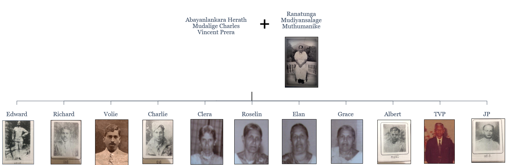

Family History
Bakmeedeniya Family Union is a unique organization in Sri Lanka formed by the descendants of a union of a respectable low country gentleman and an equally respectable Kandian lady.
History begins with the marriage of Abayalankara Herath Mudalige Charles Vincent Prera Bakmeedeniya, the gentleman from Waragoda, Kelaniya and Bowalgaha Ralalage Muthumanike from Bowalgaha, Aranayake
Charles Vincent Prera Bakmeedeniya had come to Mawanella as a Tax Collector for the government agent of Kegalle, who had been entrusted with the collection of road tax from the vehicles which traveled on the Colombo – Kandy Road. His tax collecting center was located on Galewatte near Utuwankandha church.
Ranatunga Mudiyansalage Muthumanike a resident of Bowalgaha, a beautiful village hamlet, had been a visitor to Mawanella small business center at the time which catered for the needs of the villagers such as clothing and other household needs. Eyes of Charles Vincent Prera and Mutu Manike had met in Mawanella bazaar which culminated in the happy marriage and laid the foundation for a large family of eleven children

According to the reminiscences of the children of Charles Vincent Prera and Mutu manike none of them now among the living, Charles Vincent Prera and Mutu Manike couple had settled down on a block of land in the old village of village of Nankurugama which place came to be known as Bakmeedeniya village
Birth of Bakmeedeniya family union
The Bakmeedeniya family union is the brainchild of one of the descendants of Bakmeedeniya family and a founder member of the Family Union namely, Col. George Ranatunga. The birthplace of the family union was the residence of Ellan Bakmeedeniya one of the daughters of Prera and Mutu Manike, and her husband of J.D.S. Ranatunga on Erabudupella Estate.
“It was customary for my uncle Podiralaharmy (Theodore Bakmeedeniya) one of the sons of the Charles Vincent Prera and Mutu Manike to visit my father and mother during the festive season of Sinhala New year on the month of April. Such a meeting in the year 1947 happened to be the year of birth of our Bakmeedeniya Family Union. On this happy Sinhala New Year’s day in 1947 may uncle T heodore who was affectionately called Podiralaharmy having come to the house of my father and mother (J.D.S. Ranatunga and Ellan Bakmeedeniya) after the exchange of family greetings with a sheaf of beetle leaves and having partaken of the kiribath, kawum and other pleasantries were engaged in a friendly chat with my parents, my elder brothers George and Berty, Chandra and Cyril. The idea came from my elder brother George “Why not we form and organization of the descendants of our Seeya and Archchi – Charles Vincent prera and Muthu Manike so that all relations can meet at least once a year in one place and exchange greetings". All seven of us present namely my father and mother, uncle podiralaharmy, elder brother George, Chandra and Bertie, Cyril agreed to form the association and thus was the birth of BakmeedeniyaFamily Union on the year 1947. Thus late J.D.S. Ranatunga, Ellen Ranatunga, Theodore T.V.P. Bakmeedeniya, Colonel George Ranatunga, Bertie, Chandra and Cyril became the founder members of the “Bakmeedeniya Family Union” which the members cherish very much today.”
From a founder member
Late Colonel George Ranatunga drafted the first set of rules for the conduct of the affairs of the union which was embedded from time to time and today we have a complete constitution with all the past amendments to guide the members. It is heartening to put on record that this organization called the Bakmeedeniya Family Union has met every year during the festive season of April since the inception in 1947. At the beginning the Union always met at the residence of one of its members at which meeting the chief occupant of that house provided the meals for the participants. As time passed and due to many reasons, it has been decided to conduct the annual meeting at a hotel or a spacious restaurant which would be more convenient for the participants.
Written By:- Prof. Arditya Wickramatunge